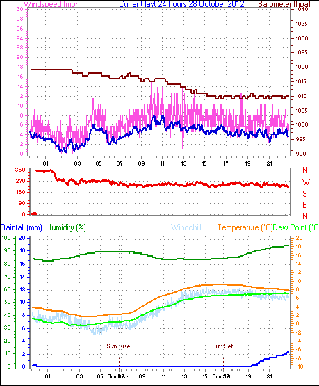
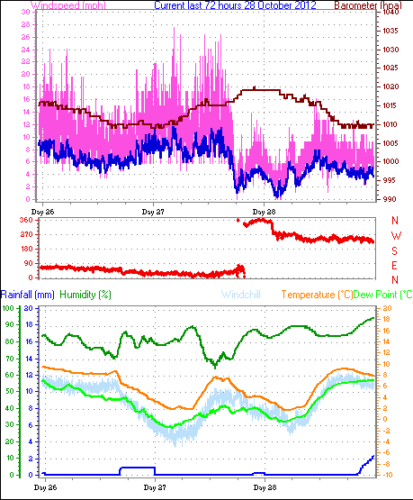
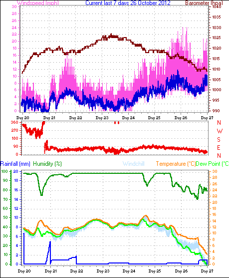
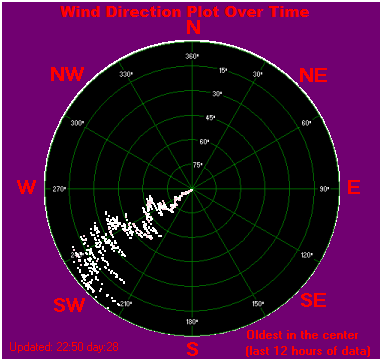
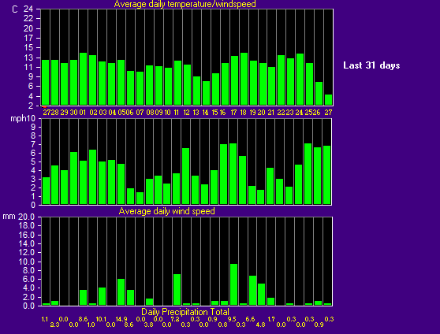
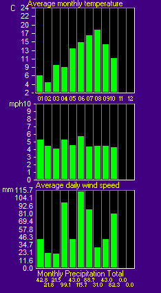

Latest Graphs & Charts
| Last 24hrs |
 |
| Top blue line is av. speed; pink is max gust for that minute |
| -- |
| Last 72hrs |
 |
| --- |
| -- |
| Last Week |
 |
| Updated daily at 00:20 |
| -- |
| Last 12hrs Wind-Direction Plot |
 |
| Oldest data is in the centre |
| -- |
| October Wind Rose |
 |
| The further out from the centre, the more frequent that direction; colours represent the proportion of that direction at each speed interval. |
| -- |
| 31-Day Trends |
 |
| Updated every 24hrs at 03:35 |
| -- |
| 2012 Monthly Trends |
 |
| Updated every 24hrs at 03:35 |
| -- |